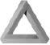

Dün akşam olanları anlamakta bile zorluk çekiyordu. Sanki gerçeküstü bir deneyim yaşamıştı. Kahve yapmaya karar verdi; kafeinli bir şeyler içince zihni açılıyordu. Suyun kaynarken çıkardığı sesi dinlerken telesekreterindeki kırmızı ışığın yanıp söndüğünü fark etti. Eninde sonunda telesekreterine bırakılan mesajları dinlemek zorunda kalacağını bildiği için, derin bir nefes alıp düğmeye bastı. Bir saniye içinde Vitaly Nikolaev’in sesini duydu.
“N’aber Caine? Ben Vitaly. Nasılsın diye bir arayayım dedim. Kulübe gelsene. Seni merak ediyorum.”
“Eminim ediyorsundur,” dedi Caine telesekretere doğru dönerek. Sonraki beş kişi mesaj bırakmadan kapamıştı. Cep telefonunda da sesli mesaj yoktu. Günlerden Salıydı; Nikolaev’e iki gündür 11.000 dolar borcu vardı. Nikolaev, haftalık yüzde beş faiz işlettiğine göre, Caine’nin şu anda ona 11.157 dolar borcu vardı. Ağzına edilmişti kısacası.
Hastaneden eve dönerken banka hesabındaki tüm parayı çekmişti. Elindeki 438.12 dolar bir haftalık faizi bile ödemeye yetmezdi. Nikolaev konusunda ne yapacağını kestirmesi gerekiyordu. Caine sorunu her aklı başında istatistikçi gibi ele aldı: Tüm olasılıkları gözden geçirip, her birinin sonuçlarını hesaplayıp, en iyi yolu belirlemeye çalıştı.
Ne yazık ki yalnızca iki seçeneği vardı: Ya parayı ödeyecekti ya da ortadan kaybolacaktı.
Ama nöbet geçirip dururken ortadan kaybolamazdı. Hem bir yerlere kaçıp hem de deneysel ilacı almaya devam edemezdi. Haftada iki defa kan vermeye gitmesi gerekiyordu; elinde de sadece yirmi hap yani on günlük ilaç vardı. Kozlov’dan kaçmanın bir yolunu bulabilse de nöbetlerinden kaçmanın bir yolunu bulamayacaktı. Hayır, Dr. Kummar’la tedaviye devam etmek zorundaydı. Sırf denemiş olmak için olsa bile.
Bu yüzden de parayı ödemek zorundaydı ya da Nikolaev’le bir şekilde uzlaşacaktı. Belki de çalışarak ödeyebilirdi borcunu. Caine bu fikir aklına geldiği anda bile bunun olmayacağını bilerek başını salladı. Ne olarak çalışacaktı? O hangi işi yapabilirdi ki bu haliyle? Yok, olacak şey değildi. İç geçirdi. Başka çaresi yoktu; parayı bulmak zorundaydı.
Peki, nasıl nakit para bulacaktı? İlk olasılık çok açıktı: Kaybettiği şekilde para kazanabilirdi yani kumar oynayarak. Düşünmeden cebindeki paraya dokundu. Elindeki 400 dolarla diğer kulüplerden birine gidip para kazanmaya çalışabilirdi. Bu olasılık dahilindeydi.
Eğer şansı yaver giderse sabaha kalmaz birkaç binlik olurdu elinde. Ama kaybederse, eskisinden bile kötü durumda olurdu. Ayrıca, Nikolaev onun başka bir kulüpte oynadığını duyarsa, bundan hiç hoşnut olmayabilirdi.
Peki, ya Atlantic City’ye gitse? Bir otobüse atlayıp gidebilirdi ve belki de masalarda çaylak turistleri ağına düşürürdü. Eğer dikkatli bir şekilde oynarsa kesinlikle kazanırdı, ama sorun şu ki bu uzun süre alırdı. Kaybetmeye mahkûm olanlar az parayla oynarlar; üçe altı veya beşe on en fazla. Ayrıca, her masada bir kurt olurdu. Böyle oyunlarda, saatte 20-30 dolar kazanırdı. Bu aslında fena para değildi, ama yine de gecikmiş olurdu. Eğer günde on altı saat bile oynasa 320 ile 480 dolar arasında kazanırdı. Bu hesaba göre de, yüz on altı gün aralıksız kazanması gerekirdi.
Hayır, kumarhane işi yatmıştı. Başka bir poker kulübünde oynama seçeneğini de son dakikaya kadar düşünmeyecekti. Diğer seçenek bir işe girmekti. Ama sürekli bir işi bu kadar kısa sürede nerede bulacaktı ki? Ülkenin ekonomik durumu pek parlak değildi ve Caine’nin özgeçmişinde uzun süredir işsiz olduğu yazıyordu. Bir iş görüşmesine giderse başına gelecekleri düşündü.
“Bay Caine, 2002’den beri ne işle uğraşıyorsunuz?”
“Bir aralar beni kapattılar çünkü haftada bir-iki kez kendimden geçip olmadık şeyler görüyorum, sonra da bedenim kasılmaya başlıyor. Ama Eylül’den sonra hep Vitaly Nikolaev’in kulübündeydim. Pokerde üstüme yoktur. Bu arada, aklıma gelmişken, acaba bana 11.000 dolar avans verebilir misiniz? Rus mafyası beni tepelemeden önce onlara borcumu ödemem gerek de.”
Belki de profesörlerinden birinden bir araştırma işi kapabilirdi. Bu aslında iyi bir fikirdi, ama işe yarayıp yaramayacağını bilmiyordu. Böyle işlerde rekabet yoğundu, ayrıca işi bitirmeden avans falan da vermezlerdi. Zaten, alacağı para da dişinin kovuğunu doldurmazdı. Esas para özel sektördeydi, zaten bu yüzden bütün kalburüstü profesörler aynı zamanda finans piyasasında danışmanlık yapıyorlardı.
Birden aklına bir fikir geldi. Eski tez danışmanından onu bir danışmanlık projesi kapsamında işe almasını rica edebilirdi. Eğer Caine adamı it gibi çalışacağına inandırırsa, belki de Doc -eski hocasına hep Doc yani doktor derdi- ona analizlerinin bir kısmını yaptırmayı kabul ederdi. Hatta şansı yaver giderse işe başlamadan bile para verebilirdi. Saatine baktı. Saat onu geçiyordu.
Doc genelde 10:30’da Columbia Üniversitesi’nde istatistik dersi verirdi. Doktora seviyesinde bir ders verip de hazırlanmakla zaman harcamak istemediği için, bu derse girip geri kalan zamanında araştırma yapmayı tercih ediyordu. Profesörlerin çoğu gibi Doc da ders vermekten nefret ederdi. Ama sınıfına girip öğrencilerle nasıl uğraştığını görenler buna asla inanmazdı.
Okulun sekreterliğini arayıp Doc’un bugün yeni dönemin ilk dersini vereceğini öğrendi. Eğer acele ederse, Doc sınıfa girmeden onu yakalayabilirdi. Deri ceketini kaparken cebindeki beyaz haplar yere düştü. Caine bir sonraki dozu alma zamanı geldiğini hatırladı. Hapı avcuna aldığında, bir an için, dün gece duyduğu o garip seslerin gerçek olup olmadığını sorguladı. Acaba bunlar deney aşamasındaki ilacın bir yan etkisi miydi?
İlacı almaktan çekiniyordu, ama almamaktan da korkuyordu. Bu işi yapmamak için kendi kendini doldurmasına izin vermeden hapı ağzına attı, yuttu ve kapıdan çıktı. Merdivenlerden aşağıya koşarken bir şey unuttuğunu düşündü, ama unuttuğu şeyin ne olduğunu kesinlikle hatırlayamadı. Sanki cevap dilinin ucundaydı, ama bir türlü bulamıyordu. Umursamadı, hatırlardı nasıl olsa.
Her zaman hatırlanırdı sonunda böyle şeyler.

Yirmi yedi dakika sonra, Caine derin bir nefes alıp sınıfa girdi. Arkadaki bir sırayı gözüne kestirip oturdu. Kalbi çok hızlı atıyordu, ama bayılacakmış gibi de hissetmiyordu. Bu sadece bir odaydı. Dersi veren de kendisi değildi. Yerinde kaldığı sürece sorun çıkmayacaktı.
Sınıfın önünde duran Doc, eline bir tebeşir alıp kocaman harflerle tahtaya yazdı.
OLASILIK SIKICIDIR
Birkaç öğrenci gülüştü. “Buna karşı çıkan var mı?” Kimse karşı çıkmadı. “İyi, madem bu konuda anlaştık, bu sınıfta öğreneceğiniz her şeyin işinize yarayacağını söyleyeyim. Çünkü sınıfta Olasılık Teorisi’nden söz etmeyeceğiz. Hayattan söz edeceğiz. Ve hayat çok ilginçtir. En azından benimki öyle; sizinki nasıl bilemeyeceğim.”
“Olasılık Teorisi hayatın sayılara dökülmüş halidir,” diye devam etti. “Size bir örnek vereyim, bir gönüllüye ihtiyacım olacak. El kaldırabilirseniz...” Birkaç kişi el kaldırdı. Tam o anda sınıfın kapısı kapandı ve herkes geç gelenin kim olduğunu görmek için başını çevirdi. Spor giyimli velet çoktan sırasına oturmuş, başındaki beyzbol kepiyle yüzünü gizlemeye çalışıyordu. Doc hızlıca odanın arkasına doğru yürüdü ve öğrencinin koluna yapıştı.
“İşte bir gönüllü,” dedi Doc çocuğun kolunu sanki bir yarışmayı kazanmış gibi kaldırarak. “Adın ne bakalım?”
“Mark Davis.”
Doc döndü, masasından bir bilgisayar çıktısı kaptı ve bunu Mark’a verdi. “Bu ne?”
“Şey... Sınıf listesine benziyor.”
“Aynen öyle. Şimdi söyle bakalım, kaç öğrencinin adı yazılı burada?”
Mark bir an için durdu, sonra başını kaldırdı. “Elli sekiz.”
“İsimlerin yanında doğum günleri yazıyor mu?”
“Hayır.”
“Şimdi eğlence zamanı,” dedi sınıfa dönüp şaka yapıyormuş gibi bakan Doc. Sonra da Mark’a dönerek, “İddiaya girmeyi sever misin Mark?” diye sordu.
“Tabii.”
“Çok iyi!” Doc ellerini birleştirdi. Elini cebine attı ve beş tane 1 dolarlık banknot çıkardı. Sihirbazmış da, sanki numara yapacakmış gibi bu parayı sınıftakilere gösterdi. “Seninle 5 dolarına iddiaya girelim. Bence bu sınıfta iki kişi aynı günde doğmuş. Sen ne dersin?”
Mark sınıfa baktı, sonra da gülümseyerek Doc’a baktı. “Olur, ben iddiaya varım.”
“Çok güzel. Haydi bakalım o zaman.”
Mark anlamaz gözlerle bakıp kaşlarını kaldırdı.
“Parayı görelim diyorum.”
Mark omuz silkti ve cebine el atıp kırışmış bir beşlik banknot çıkardı.
Doc bunu elinden kapıp masaya koydu. Sonra dönüp sınıftakilere gülümsedi. Mark’ı işaret ederek, “Enayi,” dedi. Diğer öğrenciler güldüler, Mark ise kıpkırmızı oldu. “Eğer Mark hayat konusunda biraz deneyimli olsa ya da olasılık teorisini bilse, şu anda kaybetmeye mahkûm olduğu bir iddiaya girdiğini bilirdi. Bana nedenini açıklayabilecek kimse var mı?”
Cevap veren olmadı.
“Peki, başka gönüllüler bulalım o zaman.” Kimse kıpırdamadı. Sonra Doc, Caine’yi gördü. Caine gizlenmeye çalıştıysa da eski öğretmeni onu görmüştü. “Bugün çok özel bir misafirimiz var. En iyi doktora öğrencilerimden biridir kendisi: David Caine. David elini kaldır bakayım.” Caine istemeye istemeye elini kaldırdı; birden dili damağına yapışmış, ağzı kurumuştu. Sınıftakiler dönüp ona baktılar. “Ben ona ‘yağmur adam’ derim çünkü sınıfta hesap makinesi kullanması gerekmeyen tek kişi oydu. Bana yardım etmeye hazır mısın David?”
“Herhalde bana söz hakkı bırakmayacaksınız bu konuda?” dedi Caine göğsünden her an fırlayacakmış gibi çarpan kalbini umursamamaya çalışarak.
“Aslına bakarsan haklısın,” dedi Doc.
“O zaman benim için bir şereftir.” Öğrenciler gülüştü. Caine kalbini zar zor zaptetti. Bisiklete binmek gibi bir şeydi bu. Bunu yapabilirdi.
“Aferin,” dedi Doc ellerini yine kavuşturarak. “Seninle benim aynı günde doğmuş olma olasılığımız nedir?”
“Binde 3 civarında.”
“Normal insanlara bu sonuca nasıl vardığını açıklar mısın?”
“1’i 365’e bölerek.”
“Aferin. Hepimiz yılın 365 gününden birinde doğduğumuza göre seninle benim aynı günde doğma olasılığım 365’de 1.” Dönüp tahtaya yazdı.
1/365 = 0.003 = 0.3%
“Herkes bunu anladı mı?” Öğrenciler kâğıt kalem çıkarırken, not tutma zamanı geldiğini anladıkları için, bir yandan da söyleniyorlardı. “Tamam, o zaman bizim aynı günde doğmadığımız konusunda iddiaya girmeni istesem bunu kabul ederdin herhalde, değil mi?”
“Evet.”
“Bu akıllıca bir iddia olurdu, büyük bir olasılıkla da kazanırdın. Benim doğum günüm 9 Temmuz. Seninki ne?”
“18 Ekim.”
“İşte. Demek ki aynı günde doğma olasılığımız 365’de 1; doğmama olasılığımız ise 365’de 364’tü. Şimdi de bu sınıftaki başka hiç kimseyle doğum gününün aynı olmama olasılığının ne olduğunu söyle bana.”
Caine bir an için düşündü, sonra başını kaldırdı. “Yüzde 14.9.”
“Doğru, peki bu sonuca nasıl vardığını açıkla.”
“Eğer sınıfta herhangi biriyle aynı günde doğmuş olma olasılığımı hesaplamak istersek, ilk önce sınıftaki 59 kişiyle aynı günde doğmadığım olasılığını hesaplamam gerekir. Yani (364/365)59. Bu da sınıftaki herhangi biriyle aynı günde doğmadığım hesabını 59 kere kendiyle çarpmak demek.”
Caine konuşurken Doc yazıyordu.
Olasılık (herkesin farklı bir günde doğduğu) = (364/365)59
= %85.1
“Bu yüzden de,” diye devam etti Caine, “Bu sınıftaki kimseyle aynı günde doğmadığımın olasılığı yüzde 85.1’se, o zaman aynı günde doğduğum olasılığı da yüzde 14.9’dur.”
Olasılık (aynı gün) = 1 - olasılık (farklı gün)
= %100 - %85.1
= %14.9
“Mükemmel,” dedi Doc. “Herkes anladı mı?” Doc’un yazdığı işlemleri defterlerine geçiren öğrenciler başlarını salladılar.
“Şimdi geriye dönelim bakalım. Seninle aynı günde doğmadığımızı biliyoruz. Peki, ikimizin de bu sınıfta başka hiç kimseyle aynı günde doğmamış olma olasılığı nedir?”
Caine boğazını temizledi. “İlk önce benim kimseyle aynı günde doğmadığım olasılığını hesaplarız ki bunun %85 olduğunu biliyoruz zaten. Sonra da aynı hesabı sizin için yaparız, ayrıca aynı günde doğmadığımızı da dikkate alırız.”
“Dur, çok çabuk ilerledin,” dedi Doc dalga geçer gibi. Elindeki tebeşiri Caine’ye fırlatınca, Caine düşünmeden uzanıp yakaladı. “Gel de burada göster ne demek istediğini.”
Herkes dönüp Caine’ye baktı. Elleri terlemişti ve kalbi hızla çarpıyordu, ama kendini zorlayıp ayakta durdu. Sınıfın önüne doğru yürürken sanki attığı her adım yıllar alıyordu. Ama tahtaya yaklaştıkça kendine olan güveni de artıyordu sanki. Sonunda tahtaya vardı ve daha önce defalarca yaptığı gibi sınıfın önünde durdu. Gözlerini kırpıştırdığında dünyası allak bullak olmadı. Dr. Kummar’ın ilacı işe yaramıştı. Ait olduğu yerdeydi.
“Peki,” dedi Caine sınıfa dönerek. ”Ne diyordum..? Evet, Doc’un ve benim doğum günlerimiz aynı gün değil. Bizimle aynı günde doğmuş başka birinin olma olasılığını hesaplamak için, ilk önce Doc’un sınıftaki başka biriyle aynı günde doğmuş olma olasılığının ne olduğunu hesaplamak gerekir.”
“Biraz önce yaptığımız hesabı yapıyoruz, ama bu sefer 363’ü 364’e bölüyorum. Neden? Çünkü Doc’un benimle aynı günde doğmadığını biliyoruz zaten. O zaman bir günü eledim. Bunu da 58 kere kendisiyle çarpıyorum çünkü onu sınıftaki geri kalan 58 kişiyle ele alıyorum, 59’uncu benim.”
“Bu yüzden de Doc’un sınıfta başka herhangi biriyle aynı günde doğmamış olma olasılığı %85.3.”
Olasılık (Doc - farklı bir günde) = (363/364)58
= %85.3
Caine sınıfa doğru döndüğünde bir an için yine palmiye elleri görür gibi oldu ve midesi ağzına geldi. Sonra gözlerini sıkıca yumdu ve açtı. İyiydi. Palmiyeler yoktu. Derin bir nefes alıp devam etti.
“Şimdi, bizim ikimizin de kimseyle aynı günde doğmamış olma olasılığını hesaplamak için, iki olasılığı birbiriyle çarpacaksınız.”
Olasılık (Caine ve Doc - herkesten farklı günler)
= Olasılık (Caine farklı)*Olasılık (Doc farklı - Caine hariç)
= (364/365)59 *(363/364)58
= (%85.1)*(%85.3)
= %72.5
“Hem Doc’la hem de benimle aynı günde doğan birinin olmama olasılığı %72.5. Yani böyle birinin olması olasılığı %27.5.”
Olasılık (C&D aynı gün) = 1 - Olasılık (farklı gün)
= %100 - %72.5
= %27.5
“Herkes buraya kadar anladı mı?” Doc birden araya girince Caine şaşırdı. Onun sınıfta olduğunu bile unutmuştu. “Harika,” dedi Doc herkes başını sallayınca. “Peki, son soru: Sınıftaki iki kişinin aynı günde doğmuş olma olasılığı nedir?”
“Peki,” dedi Caine tahtaya doğru dönerek, “Diyelim ki bizim farklı günlerde doğduğumuzu bilmiyoruz, aynı işlemi yapıyoruz: Yani bizim aynı günde doğmuş olma olasılığımızı hesaplarken yaptığımız işlemi. Sonra sınıftaki her öğrenci için bunu tekrarlıyoruz, her seferinde de gün sayısından bir gün eksiltiyoruz.”
Olasılık (hiç kimse başkasıyla aynı günde doğmadı)
= (364/365)*(363/365)*(362/365)*....*(306/365)
= 0.006
= %0.6
“Demek ki bu sınıftaki iki kişinin aynı günde doğmamış olma olasılığı %0.6, yani iki kişinin aynı günde doğmuş olma olasılığı %99.4.”
Doc yavaşça Caine’yi alkışladı. Dönüp masada duran paraları cebine koydu, sonra da Mark’ın sırtını sıvazladı. “Para için teşekkür ederim Bay Davis. Oturabilirsin.”
“Bir dakika ama” diye karşı çıktı Mark.
“Aklınıza takılan bir şey mi var?”
“Arkadaşınız yanıldığımı söyledi, ama olmayabilir de.”
“İnançsız biri var aramızda demek. Yani bana Olasılık Teorisi’ne inanmadığınızı mı söylemeye çalışıyorsunuz?”
“Yüzde yüz inanmıyorum,” dedi Mark pis pis sırıtarak.
“İmansız!” diye bağırdı Doc sanki kilisede vaaz veriyormuş gibi ellerini kaldırarak. “Kardeşlerim, aramızda bir imansız var! Bu zavallı kulun ruhunu huzura kavuşturalım, onu kurtaralım! Ocak’ta doğan herkes ayağa kalksın.”
Dört öğrenci ayağa kalktı. “Arka sıradakinden başlayarak herkes doğum gününü söylesin.”
Kimse aynı gün doğmamıştı. Mark’ın ağzı kulaklarındaydı. Doc sadece omuz silkti. “Yerinde olsam gülmezdim. Biraz sonra çok kötü duruma düşeceksin.” Doc öğrencilere doğru döndü. “Peki. Ocak doğumlular otursun. Şubat doğumlular kalkıp doğum günlerini söylesinler.”
Bu sefer beş öğrenci kalktı. Kimse aynı günde doğmamıştı. Mart, Nisan, Mayıs ve Haziran’da da aynı günde doğan yoktu. Mark kendinden emin bir şekilde sırıtıyordu artık. Sonra sıra Temmuz doğumlulara geldi.
Sıska bir mühendislik öğrencisi, “3 Temmuz,” dedi.
Uzun boylu, atletik yapılı, kısa saçlı bir öğrenci, “Temmuz’un 12’si” dedi.
“Hey, ben de Temmuz’un 12’sinde doğdum,” dedi pembe tişörtlü çekik gözlü bir kız.
Doc gülümsüyordu, kollarını iki yana açıp eğilerek selam verdi.
“İşte size kanıt.”
Mark yüzünü ekşitip yerine oturdu.
“Peki, bu işlemleri niye yaptık? Amacımız neydi? İlk önce şunu söylemek gerekir: Grup ne kadar geniş olursa, olasılık da o kadar büyür. Yani yeterince gözlemlersek her şey olabilir - ve olur - her ne kadar olasılık dışı olursa olsun. Diyelim ki sınıfta 10 kişi olsak Mark’ın kaybetme olasılığı ve iki kişinin aynı günde doğmuş olma olasılığı... Yağmur Adam biraz yardım etsen?”
Caine bir an için gözlerini kapadı, sonra da açtı. “Yüzde 12 civarında.”
Doc gülümsedi. “Evet. Ne diyordum? Şimdi bundan çıkaracağımız ikinci derse gelelim.” Mark’a bakıyordu. “Olasılık Teorisi hiçbir zaman yanlış değildir, yanıltmaz. Buna inanın, çünkü tek gerçek budur.”
Doc kısaca selam verdi, birkaç kişi onu alkışladı bile. Gülümsüyordu. “Şimdi okuduklarımıza bir bakalım.”
Caine bunu duyunca yerine döndü. Yürürken kendini çok mutlu hissetti. Başarmıştı. Şu anda, Vitaly Nikolaev’e borcu ve epilepsisi başının üzerinde duran Demokles’in kılıcı gibi sallanıyorsa da, Caine’nin umrunda değildi bunlar. Birkaç dakikalığına bile olsa ders verebilmişti. On sekiz aydır ilk defa, belki de eski hayatına kavuşabileceğine inandı. Eğer bunu önceden bilebilseydi, Dr. Kummar’ın klinik deneylerine katılmak için bu kadar beklemezdi.
Kırk beş dakika sonra Doc dersini bitirdi. “Ders bitmiştir. Çarşamba’ya devam ederiz. Şansınız yaver giderse belki Bay Caine de gelir.”
Öğrencilerin çoğu sınıftan hemen çıktı, ama birkaç yalaka öğrenci Doc’un çevresini sarıp ona sorular sormaya başladı. Bunlar da dağıldıktan sonra, Caine eski danışmanının yanına gitti.
“Seni görmek güzel Caine,” dedi Doc onun sırtını sıvazlayarak. “Aslında bunu bir gösteriye çevirip para kazanmalıyız.”
“Bence bizi görmek için para ödemez insanlar.”
“Dalga mı geçiyorsun? Her biri dört ders için 14.000 dolar ödeyen 58 öğrenci biraz önce para vermedi mi sence? Bu da...”
Caine gözlerini kırpışırdı. “Öğrenci başına 134.62 dolar eder.”
“Aynen öyle.”
“İyi,” dedi Caine. “O zaman bugünkü dersten payıma düşen de 3.904 dolar. Çek de kabul edilir.”
Üzerinde, bir kurye şirketi olan Fed’Ex’in lacivert-turuncu logosu olan beyaz minibüs, Sam’in lokantasının karşısında durdu. Bu, UGA’nın sahibi olduğu paravan şirketlerden birinin kırk minibüsünden biriydi. Ama dışı hariç bu araç pek de diğerlerine benzemiyordu. Çok güçlü bir motoru vardı ve askeri teçhizatlı gözetleme ekipmanı yüklüydü.
Çalıntı üniformalarının göğsünde yazan sahte isimleri dışında, minibüsteki üç görevlinin üzerinde kimlik yoktu. Steven Grimes grubun lideriydi. O ülkedeki en iyi gözetlemecilerden biriydi. Gerçi yağlı siyah saçlarına ve hayalet kadar solgun yüzüne bakınca yanıltıcı bir imaj çiziyordu.
Gözetleme merkezinde olduğu zamanlarda geniş deri bir koltukta oturur ve on monitöre birden bakıp, önündeki beş klavyeyi kullanırdı. Ama sahaya çıkınca olanakları kısıtlanıyordu. Elinde sadece üç ekran ve iki klavye vardı. Yere çakılı minik bir metal taburede oturuyordu. Ama sahada olmayı daha çok sevdiğinden, bu onun hoşuna bile gidiyordu.
Her şeyden çok gözetlemeyi seviyordu. Görülmemesi gerekeni görmeye gelince, Grimes bu işin piriydi. Bu konuda eğitim almamış olmasına rağmen, elektronik konusunda bir dahiydi ve babası gibi usta bir hırsızdı. Bu iki becerisi sayesinde, kameralar yapıp, istediği yere yerleştirebiliyordu. Üniversitenin ikinci yılında kızların soyunma odasına bir kamera yerleştirdi. Okuldan atıldıktan sonra profesyonel olarak gözetlemek istedi; bunu iş olarak yapmak isteyince de UGA’ya başvurdu. İlk başvurusu anında reddedildi, ama o yılmadı. UGA’nın sistemine izinsiz girip, şifreleri kırıp, kriptografi bölümünün başındaki adama, ekranını açtığında karşısına çıkacak bir mesaj yolladığı zaman ajanstakilerin fikri değişti.
Grimes’i bir sonraki gün hemen işe aldılar. Sonraki sekiz yıl boyunca çok zevk aldı işinden. Kendi laboratuvarını verdiler ona, bir de casus aletleri alması için sonsuz bir bütçe sağladılar. İşinde sevmediği şeyler de vardı; örneğin, tüm bürokratik işlemlerden ve patronu olan Dr. James Forsythe’den nefret ediyordu. Forsythe ya da Grimes’in deyimiyle Dr. Jimmy, gerçekten çok rahatsız ediciydi. Hatta diğer askeri personelin toplamından bile daha beterdi.
Grimes ve Forsythe birbirlerini hiç sevmezler, sürekli atışırlardı yine de son zamanlara kadar karşılıklı çıkarlara dayalı bir ilişki yürütmüşlerdi. Ama Forsythe’nin verdiği talihsiz borsa tüyosu sayesinde Grimes elindeki avcundaki tüm parayı yitirmişti. Eğer Dr. Jimmy olmasaydı, Grimes’in şu anda bankada 200.000 doların üzerinde parası olacaktı. Ama iki ay önce Grimes varını yoğunu philoTech diye bir şirkete yatırmıştı çünkü Forsythe ona Senatör Daniels’in şirketin dev bir devlet ihalesini almasını sağlayacak büyük bir savunma yasa tasarısını desteklediği haberini uçurmuştu.
Birkaç hafta sonra yasa hakkındaki haber halka açıklanınca 52 haftadır 20 dolar olan şirket hisseleri 101.5’e fırladı. Grimes, parasını alıp çekileceğine, iki misli yatırım yaptı çünkü devlet ihalesi sayesinde parasının üç mislini alabileceğini biliyordu. Bir servet kazanmak üzereydi ama sonra Daniels uykusunda ölünce tüm hayalleri suya düştü. Daniels gidince savunma tasarısı yattı, philoTech de kontratı kapamadı. Sonra da muhasebe skandalıyla gazetelere manşet oldu.
Günün ilk saatlerinde hisseler yüzde 98’lik bir düşüş gösterdi ve Grimes beş kuruşsuz kaldı. Elinde 10.000 dolarlık hisse kalmıştı. Forsythe kendisiyle aynı durumda mıydı peki? Değildi tabii ki. İt herif, hisseler yükselir yükselmez satmıştı ve tomarla para kazanmıştı.
Grimes’in bu konuda yapabileceği hiçbir şey yoktu. İşin daha da kötüsü, parasını kurtarmanın tek yolu Forsythe’nin yanında kalmaktı. İşte o yüzden de bu herifin işini yapıyordu şimdi. O anda telefonu çalınca konsoldaki bir düğmeye bastı. Dinlediği müziğin yerine Dr. Jimmy’nin sinir bozucu sesini duydu.
“Ses kaydı yapabiliyor musunuz?” dedi Forsythe selama sabaha gerek duymadan.
“Acelen ne Dr. Jimmy?” dedi yanındakilerin gülüşmelerinden zevk alarak Grimes. “Augy iş başında. Birkaç dakikaya devreye girer.”
“İyi,” diye tersledi Forsythe. “İşi halledince ethernete de aktarın.”
Dr. Jimmy telefonu kapayınca, Grimes de monitöre odaklandı. Restorandaki yaşlı bir herifi görüyordu. Tversky neden bu kadar önemliydi ki Dr. Jimmy herifin öğle yemeğini yiyişini seyretmek istesin?
Doc’un en sevdiği lokantanın kapısının üstündeki neon tabelada ‘Dünyanın en iyi çorbaları ve burgerleri’ yazıyordu. Caine bu ikisinin bir arada yenmesinin garip olduğunu düşünmüştü hep ve bunları bir arada yememişti hiç. Ama yine de yemekler iyiydi. Doc ona, okuduğu son makaleleri anlatırken, Caine cesaretini toplayıp kendisini işe almasını isteyecekti. Ama tedirgindi. Doc’ta sanki farklı, garip bir şeyler vardı. Garson kıza bağırmıştı içeceklerini yanlış getirdi diye. Doc böyle şeyler yapmazdı.
Caine, Doc’tan bir şey istememek için bahaneler bulmaya çalıştığını düşündü. Cesaretini toplayıp tam ağzını açacakken, lokantaya bir adam girdi ve Doc’a baktı. O da hemen yanına gelmesini işaret etti. Adam görünüş olarak Doc’un tam tersiydi. Üzerinde düzgün, yelekli gri bir takım elbise vardı ve koyu kırmızı bir papyon takmıştı. Caine bu adamı tanıyordu. Doc ara sıra onunla birlikte araştırma yapardı, ama ismini hatırlayamadı.
“David’i hatırladın, değil mi?” diye sordu adama Doc, ama David’e adamı tanıtmadı.
“Tabii, sizi görmek ne güzel,” dedi adam. Hafifçe elini sıktığı Caine’ye sanki hayvanat bahçesinde gördüğü bir hayvanmış gibi bakıyordu.
“Nedir derdin?” diye sordu Doc meslektaşına. “Sinirli gibisin.”
Papyonlu adam dolgun saçlarını eliyle düzeltirken homurdandı. “Günüm kötü geçti de. Biriyle Heisenberg konusunda tartıştık. Başım ağrıdı.”
“Bana anlatma,” dedi Doc bir anda düşüncelere dalarak. “Ben de Heisenberg’i pek tutmam. Ya sen Yağmur Adam?”
“Pardon?” dedi Caine, Doc’un kendisini de konuşmaya dahil etmesine şaşırarak. “Ne bileyim, Heisenberg’i hiç anlayamadım.”
“Öyle mi?” dedi gözleri bir anda parlayan Doc. “Neyini anlamadın?”
Caine o anda hata yaptığını anladı. Doc’un karmaşık fenomenleri açıklamaktan ne kadar zavk aldığını unutmuştu bir an için. Yıllar boyunca, Doc borsanın çöküşünden, kaos teorisine kadar her şeyi uzun uzun açıklarken, Caine onun ofisine tıkılıp dinlemek zorunda kalmıştı.
Caine, papyonluya baktı yardım dilenircesine. Ama adam menüye dalmıştı ve konuşulanları dinlemiyordu bile. “Herhalde anlamadığım şeyi şöyle özetleyebilirim: Sırf nerede olduğunu bilmedikleri için fizikçilerin bir partikülün belirgin bir konumu olmadığını düşünmelerini anlamıyorum. Aynı anda iki yerde olacak hali yok ya.”
“Aslında olabilir,” dedi Doc konuşmayı uzun bir nutuk çekebileceği bir konuya yönelttiğine memnun olup. “Fizikçiler çift yarık deneyi sayesinde bunu kanıtladılar.”
“Peki, anlatın bakalım,” dedi Caine. Doc’u susturamayacağını bildiği için bu işten kârlı çıkıp bir şeyler öğrenmeye karar verdi. “Nedir bu çift yarık deneyi?”
“Diyelim ki bir kâğıttaki kesikten bu tabağa ışık yansıttın. Ne görürsün?”
Caine omuz silkti. “Bir çizgi halindeki ışığı.”
“Aynen öyle.” Doc ketçapla tabağına ince bir çizgi çekti. “Kesikten geçen fotonlar tabağa yansıyıp, bir çizik olarak görünecek.” Durup suyunu içti. “Şimdi, iki kesiği olan bir kâğıttan ışık yansıttığını varsayalım. O zaman ne görürsün?”
“İki çizgi.”
“Hayır,” dedi Doc. “Bir dizi bulanık çizgi ve şunun gibi gölgeler görürsün.” Doc ketçapla yaptığı çizginin yanına birkaç çizgi daha çekti ve bir patates kızartmasıyla bunları hafifçe dağıttı. “Eğer ışığın bir dalga olduğunu düşünürsen bu şaşırtıcı değil. Kâğıdın diğer tarafında birbiriyle etkileşime geçen farklı dalgaların tabağa yönelmeden önceki hallerini düşün ve bu bulanık yansımaya odaklan.”
“Eğer ışığın bir dizi partikül olduğunu düşünürsen bu fenomeni açıklayabilirsin. Her fotonun kendi frekansı olduğu için birbirleriyle etkileşime girip tabaktaki bulanık şekli oluşturuyorlar.”
“Peki, bunu açıklayabiliyoruz,” dedi Caine. “Sonra?”
Doc parmağını kaldırdı. “Anlatıyorum bekle. Son zamanlarda fizikçiler tek bir fotondan oluşan bir ışık kaynağı yarattılar ve deneyi yine yaptılar. Bil bakalım ne oldu? Diğer tarafta aynı görüntü vardı.”
Caine kaşlarını kaldırdı. “Her bir kesikten tek bir foton geçiyorsa, o zaman nasıl oluyor bu? Neden bulanık oluyor?”
“Her bir foton kendiyle de etkileşim halinde çünkü. Aynı anda iki kesikten de geçiyor deney sırasında.” Doc maç kazanmış gibi sırıtıyordu.
“Nasıl yani?”
“Çünkü, bir partikül olduğu düşünülen foton, aynı zamanda bir dalga. Bir tek kesik varken partikül gibi, ama iki kesik olunca bir dalga gibi işliyor. Bunun nedeni de fotonun aynı anda hem partikül, hem de dalga olması. Buna da partikül-dalga ikilisi deniliyor. Özünde tüm maddeler iki şeydir. Farklı ortamlarda farklı özellikleri vardır, hepsi aynı anda ölçülünceye kadar.”
“Ama bu mantıksız,” dedi Caine.
“Kuantum fiziğinin dünyasına hoş geldin,” dedi Doc bir patates kızartmasını ısırarak.
Papyonlu adam birden canlandı. “Eğer cidden aklını karıştırmak istiyorsan,” dedi Doc’a sanki Caine orada değilmiş gibi. “Ona Schrödinger’in kedisini anlat.”
Caine elini kaldırdı. “Yok, gerek yok...”
“Haydi. İki dakikada anlatırım,” dedi Doc. “Söz veriyorum, seni sıkmadan kısaca anlatacağım.”
“Peki,” dedi Caine sanki teslim olur gibi. “Son olsun ama.” Caine yanındaki adamın blöf yapıp yapmadığını kestirmeye çalışmadan öylece oturup konuşmanın ne kadar eğlenceli olduğunu unutmuştu. O gün ikinci kez dertlerini unuttu ve o anın keyfini çıkarmaya çalıştı. Bu çok zevkliydi, konu kuantum fiziği olsa bile.
“Erwin Schrödinger kuantum fiziğinin babalarından biriydi. Ama, özellikle de gerçek dünyaya uygulandığında bunun ne kadar mantıksız olduğunun o da farkındaydı, Heisenberg Olasılık Teorisi’ni açıkladığı sıralarda Schrödinger de kedisi hakkında felsefi bir soru ortaya attı. Basit bir dille anlatmak istersek sorusu kısaca şuydu: Elinde bir radyoaktif atom olduğunu varsayalım. Bunun iki hali var ‘hareketli’, ki bu zamanlarda fazla enerji saçıyor; ya da hareketsiz, ki bu zamanlarda uykuda. Kuantum fiziğine göre, biz bu atomu gözlemlediğimizde, ya bir durumda olacak, ya da diğerinde. Ama bunu gözlemlemediğimizde aynı anda iki durumda birden olacak. Aynen bir önceki örnekte aynı anda iki yerde olan foton gibi.”
“Schrödinger’in felsefi sorunu şu: Bir kediyi, biraz siyanür gazı, radyoaktif bir atom ve enerji sezdiği anda çalışmaya programlanmış bir çekiçle aynı kutuya koyarsan ne olur? Eğer radyoaktif atom hareketlenirse, çekiç şişeyi kıracak, gaz dağılacak ve kedi ölecek. Atomda bir hareketlenme olmazsa, o zaman çekiç hareket etmeyecek ve kedi yaşayacak. Ama sen kutuyu açıp da atomu gözlemleyene kadar o ne hareketli, ne de hareketsiz, ikisinin olasılıklı bir birleşimidir. O zaman soru şu: Kutu kapalıyken kediye ne olur?”
Caine bir an için düşündü “Herhalde...” Birden sustu ve gülümsedi. “Şimdi anladım; atom teorik olarak aynı anda iki durumdaysa o zaman kedi de öyle. O da aynı anda hem ölü, hem de diri; ta ki kutuyu açıp atomu gözlemleyene kadar. O zaman da kedi kesinlikle bir durumda veya bir diğerinde olur; yani ya ölüdür ya diridir.”
Doc gülümsedi. “Aferin sana. Bir de kuantum fiziğinden anlamam diyordun.”
“Bunun amacı,” diye araya girdi papyonlu adam Caine’ye dönerek, “Şunu anlatmak: Kuantum mekaniğini teknik olarak doğru, ama görülmeyen subatomik partiküle değil de, gerçek dünyaya uygulamaya kalkınca mantıksız geliyor insana.”
“Yani, Heisenberg’e inanmadığını mı söylüyorsun?” diye sordu Doc papyonluya.
“Sen inanıyor musun?”
Doc omuz silkti. “Genellikle ben, gözümle gördüğüm şeylere inanırım. Geri kalan her şey teoridir.” Sonra Caine’ye doğru döndü. “Konuyu dağıtmadan önce sen bir şey demek üzereydin.”
Caine, Doc’un patateslerinden birini aldı. Üçüncü bir kişinin yanında yardım istemek zorunda kalmak hoşuna gitmiyordu.
“Biraz başım belada da...”
“Öyle mi?” dedi endişelenerek Doc. “Neden?”
“Biraz... Nakit sıkıntısı çekiyorum.”
“Biliyorsun, bana kalsa seni anında üniversitede işe alırdım yine, ama son yaşananlardan sonra bölümdekiler kellemi uçurur. Bu dönem olmaz en azından. Ama gelecek sene bakarız.”
“Biliyorum ama, nakit sıkıntımı biraz acilen gidermem gerekiyor.” Caine utancından yerin dibine girmişti. Doc’un arkadaşı kalkıp başka bir masaya geçme nezaketini bile göstermemişti. Caine’ye sanki garip kokuyormuş gibi bakıyordu. Caine papyonlu biyoistatikçiyi görmezden gelmeye çalışarak hızla devam etti. “Eğer özel araştırma projeleriniz falan varsa, ayak işi falan yapabileceğim... Yaparım. Biraz çaresizim de.”
Doc bir an için tavana bakıp düşüncelere daldı. Caine’ye baktığında yüzü pek umut verici değildi. Yavaşça başını salladı.
“Eğer sana yardım edebilecek en ufak bir iş olsa, bilirsin tereddüt etmem. Ama şu aralar elimde hiçbir şey yok.”
Caine olduğu yerde yığılıp kalmak istemiyordu, ama kendine hâkim olabileceğine emin değildi.
“Özür dilerim,” dedi Doc.
“Önemli değil,” dedi Caine bir yandan bunun ne kadar da önemli olduğunu düşünerek. “Şansımı deneyeyim demiştim. Merak etmeyin, bir şeyler bulurum elbet.”
Caine masaya baktı Doc’la göz göze gelmemek için. Son patates kızartmasını tabakta kaydırdı ve Doc’un döktüğü ketçaba batırdı. Patatesi ağzına götürürken ucundan bir damla ketçap damlayıp tabağa düştü. Düştüğü yerin çevresine minik kırmızı noktalar yayıldı.
Bunu gören Caine için zaman sanki bir anda yavaşladı....
...
Kırmızı çizgiler kalınlaşıyor, tabağın uçlarına kadar uzuyor. O minik damla artık kızıl bir birikinti. Büyüyor. Hayat dolu. Sanki nabzı atıyor. O kadar büyüyor ki tabaktan dışarı akıyor, masaya dökülüyor, kırmızı damlacıklar saçılıyor havaya.
(yüzde 92.8432’lik bir olasılık)
Bunlar yavaş çekimde Doc’un ve meslektaşının yüzlerine doğru uçuyor. Yanaklarına ve alınlarına yapışıyor, gömleklerinde kocaman lekeler bırakıyor. Bu damlalar gömleklerini ve derilerini yakıp geçiyor. İki doktor da kan revan içinde. Koyu kırmızı kanları yüzlerinden aşağı oluk oluk akıyor, göğüslerinden fışkırıyor.
(yüzde 96.1158’lik bir olasılık)
Caine ayağa kalkıyor, nefes alamıyor. Doc sanki bir şey der gibi dudaklarını kıpırdatıyor, ama bir ses duyulmuyor. Boğazı kan yutmaktan tıkanmış, dudaklarının arasından köpürmüş kan damlaları akıyor. Caine, sanki odadaki tüm oksijen çekilmiş gibi hissediyor. Şaşırmış, ama başka hiçbir şey yok, yalnızca boşluk ve başındaki inanılmaz acı.
(yüzde 99.2743’lük bir olasılık)
İşte oluyor. Bir nöbet daha. Ama bu diğer nöbetler gibi değil. Daha önce de görsel yanılsamalar, halüsinasyonlar oldu, ama hiçbiri bunun gibi değildi ki. Hatta hiçbir şekilde değildi. Keşke bağırabilse, olanları durdurabilse, ama yapamaz...
Her şey donup kalıyor, duruyor.
Doc ve arkadaşı, tüm diğer müşteriler heykel gibi hareketsiz kala kalıyor, kan damlacıkları havada yağmur gibi asılı kalıyor. Sonra yavaşça her şey hareket etmeye başlıyor. Ama bir şeyler garip. Caine bir anda her şeyi tersine doğru, geri çekimdeymiş gibi gördüğünü anlıyor.
(yüzde 98.3667’lik bir olasılık)
Kırmızı damlacıklar kaynaklarına geri dönüyor. Yaralar küçülüp iyileşiyor. Yaralar iyileşirken Caine’nin yüzünün önünden uçarak geçen minnacık cam parçaları lokantanın girişindeki dev camın artık boş olan çerçevesine doğru uçuşuyor.
(yüzde 94.7341’lik bir olasılık)
Hızla hareket ediyorlar. Bir kamyonetin çarpık çurpuk kalıntıları düzelerek, hızla, ters yönde lokantadan dışarı çıkıyor. Kamyonet yok, minik cam parçacıkları birleşiyor dev bir bulmaca gibi... Birleşince dev pencere yeniden oluşuveriyor.
...
Caine’nin bir an için nefesi kesildi.
Doc ve arkadaşı karşısında oturuyorlardı, aynen normalde oldukları gibiydiler. Tabağına baktı; kan gölü de yok olmuştu, yalnızca döktüğü bir damla ketçap vardı. Şaşkınlıktan ağzı açık kalan David’in parmaklarının arasından kayan patates kızartması yere düştü.
“David? David?” diyordu Doc. Genelde gülen yüzünden endişeli olduğu okunuyordu. “İyi misin?”
“Ne?” dedi Caine sanki bir uykudan uyanırmış gibi başını sallayarak. “Ne oldu?”
Kan... Çok fazla kan...
“Bir an için gidip gelir gibi oldun,” dedi Doc, Caine’ye bakarak.
Caine hızlıca gözlerini kırpıştırarak Doc’a baktı, ama bir tek yüzünden aşağıya oluk oluk akan kanı görebiliyordu. Titreyen ellerinden birini Doc’a doğru uzattı. Doc hareket etmedi. Caine kendini hazırladı; ıslak, yapış yapış, o hiçbir şeye benzemeyen kanı hissedecekti. Ama titreyen parmakları Doc’un yüzüne değdiğinde bir tek hafif hafif uzamaya başlamış sakallarını hissetti. Kan yoktu.
“Yağmur Adam?” dedi Doc bu sefer daha yavaş bir sesle. Sanki yan odada uyuyan vahşi bir kaplan vardı da, gürültü edip onu uyandırmaktan çekiniyordu. Caine birden her şeyi anladı. Kamyonet dev camdan içeri girmiş ve hepsini öldürmüştü. Ölmüşler miydi? Hayır, yaşıyorlardı. Aklını toparlayamıyordu sanki karma karışıktı düşünceler. Hayır, ölmemişlerdi; öleceklerdi. Kamyonet camdan içeri girecekti. Bir tek sorun vardı: Kamyonet kazayla camdan içeri girdiğinde burada oturuyor olacaklar mıydı?
...
(yüzde 94.7341’lik bir olasılık)
....
“Buradan kalkmamız lazım,” diye fısıldadı sesi zar zor çıkan Caine.
“Neden?” diye sordu Doc.
“Kamyonet... Kan...” dedi Caine ne kadar saçmaladığının farkına varmayarak. “Eğer buradan kalkmazsak öleceğiz.”
“Olur David. Tamam,” dedi Doc. Aklını kaçırmış biriyle konuşur gibi yavaş konuşuyordu. “Hesabı ödeyeyim, gideriz. Tamam mı?”
Caine başını salladı. “Hayır. Olmaz. Şimdi gidelim!” dedi sesi yükselerek. Biliyordu; doğru kelime buydu değil mi? Biliyordu olacakları. On saniye içinde ölme olasılıklarının yüzde 94.7341 olduğunu bir şekilde biliyordu.
“Bence derin bir nefes alıp rahatlasan iyi olacak,” dedi papyonlu. “Etraftakileri rahatsız ediyorsun.”
Caine gözlerini kapayıp düşünmeye çalıştı. Aklı karışmıştı, normalden farklıydı. Şizofren nöbeti mi geçiriyordu? Her şey sanki gerçekmiş gibiydi, ama zaten Jasper de aynen öyle olacağını söylememiş miydi? Yine de zihninin içinde bağıran bir ses ona beş saniyesi olduğunu söylüyordu. Bir anda karar verdi. Gözlerini açıp ayağa kalktı.
Dört saniyen kaldı.
Kollarını açıp iki profesörün kollarına yapıştı ve onları çektiği gibi kaldırdı.
Üç saniye.
Caine geriye doğru adım atarken birine çarptı...
...
O bir garson, adı Helen Bogarty. 13 Cadde’de beş katlı bir binada oturuyor. Çinli bir bebeği evlat edinmeye karar verecek.
....
Hem Doc’u, hem de arkadaşını çekiştirerek uzaklaştırdı.
İki.
“Hey!” diye bağırdı garson dört porselen kâse yere düştüğünde. Bu Caine’nin umrunda değildi. Kazadan sonra kadının da umrunda olmayacaktı büyük ihtimalle.
“Yere yatın!” diye bağırdı Caine hepsini yere doğru çekerek.
Bir.
Bir anda inanılmaz bir gürültüyle havada metal ve cam parçacıkları uçuşmaya başladı. Caine bunu görmedi, çünkü gözleri sımsıkı kapalıydı, ama öyle olduğunu biliyordu. Bu sahneyi bir milyon kere seyrettiği gibi, sinemalarda gördüğü sahnelerden de tahmin edebiliyordu. Binlerce -tam olarak 19,483- cam parçacığı havada uçuştu. Chevrolet Silverado Z71 marka arabanın ön kısmı camdan içeri girmiş, masa da altında kalmıştı. Köşeyi dönerken hızını alamamış, kaldırımdan yükselip, fırlayıp, camdan içeri dalmıştı.
Ama sonrasında her şey değişmişti. Değişikti. Çam parçacıkları farklı yönlerde yayıldı, çünkü artık insanlara saplanmamıştı, camın önünde insan yoktu artık... Artık yoktu demek yanlıştı. Şimdi yoktu. Şimdiki şimdi değildi o gördüğü. Başka bir şimdiydi. Olabilecek, ama olmayan bir şimdi, şu an.
İşte Caine o anda bayıldı. Bayıldığı o ilk saniyede bilincini kaybetmeseydi, her şeyi anlayacaktı. Ama baygındı, o yüzden de hiçbir şey hissetmedi. Bu da iyiydi... Şimdilik.

Duman.
Ayılırken Caine’nin ilk hissettiği şey bu oldu. Duman ciğerlerine işliyor, gözlerini yakıyordu. Etrafında ısının yükseldiğini hissediyordu. Sonra birinin, harabeye dönen lokantadan kendini çekiştirerek çıkardığını hissetti. Gözleri kapalı olmasına rağmen ışığı seziyordu. Hava serin ve temizdi. Caine’yi kurtaran kişi onu yere bıraktı.
Dikkatlice bir nefes aldı; nefes alabildiğini hissedince rahatladı. Öksürdü ve temiz havayla doldurmaya çalıştı ciğerlerini.
“David iyi misin?”
Caine üstünde dikilen adamın gölgesine baktı. Doc’tu bu. “Evet, galiba.” Doc elini uzatıp oturmasına yardım etti. Caine etrafına bakındı. Papyonluyu görmüyordu hiçbir yerde. “Şey nerede...?”
“İyiyim ben,” dedi yürüyüp yanına gelen Doc’un arkadaşı. “Senin sayende.”
“Ne?” Caine’nin başı dönüyordu hâlâ.
“Eğer bizi yerimizden kaldırmasaydın, kamyonet bizi ezecekti.” Profesör başını hafifçe yana eğip sesini alçaltı. “Nasıl bildin?”
Caine ona baktı; profesörün saçı başı dağılmıştı ve tüvit ceketi yer yer yanmış gibiydi. Ne diyeceğini bilemedi. Gözlerini kapayıp hatırlamaya çalıştı. Hatırladıkları karmaşık bir ağ gibi geldi gözünün önüne; kötü bir klip gibi art arda dizilmiş sahneler: Ketçap. Kan. Cam. Kamyonet. Ölüm.
“Ben... Bilmiyorum,” dedi birden kusmak isteği gelen Caine. Zar zor ayağa kalktı. Polis arabalarının sirenlerini duyunca, polisler gelip de soru sormaya başladıklarında burada olmamanın daha iyi bir fikir olacağına karar verdi. “Gitmem gerek.” Tam dönüp gidiyordu ki, birden biri koluna sertçe yapıştı.
“David, bence olanları konuşmalıyız,” dedi profesör.
Caine adamın gözlerinin içine bakınca gördüğü hoşuna gitmedi. “Bir şey olduğu yok. Gözümün ucuyla kamyoneti gördüm. Hepsi bu. Şimdi bırakın gideyim.” Papyonlu kolunu biraz gevşettiyse de gözlerindeki ifade değişmedi. Caine, Doc’a dönüp, “Sizi sonra ararım,” dedi. Sonra papyonluya döndü. “Hoşça kalın Profesör.”
“Resmiyete gerek yok, David. Adım Peter.”
Caine cevap vermeye gerek duymadı. Yürüyerek oradan uzaklaştı.

Caine şehrin sokaklarında kaç saat dolaştığını bilmiyordu. Sokaklar, caddeler boyunca yürüyüp, trafik lambalarındaki ışıklara göre yön değiştirdi. Lokantada yaşadıkları sürekli aklından geçip duruyordu.
Bunun mantıklı bir açıklaması yoktu. Ama bu da tam olarak doğru değildi, değil mi? Aslında birçok mantıklı, akla yatkın açıklama vardı, ama o bunu itiraf etmek istemiyordu: Nöbetleri önlemek için aldığı ilaç onu uçurumun kenarından aşağıya itmişti, yani aklını kaçırmıştı, deliriyordu. Bu şizofren olduğunun bir belirtisiydi, çok gerçekçi halüsinasyonlar görüyordu.
Ama bu olay gerçekleşmişti. İsten kapkara olmuş kıyafetlerine bakınca bunun gerçekten olduğu belliydi, değil mi? Ama ya bu da bir yanılsamaysa? Ya şehrin sokaklarında amaçsızca dolaşırken üzerindeki kıyafetlerin is kaplı olduğunu düşünüyorsa ve aslında tertemiz kıyafetler varsa üstünde? Acaba bu daha mantıklı değil miydi...? Bunu aklına getirmek bile istemiyordu. Neden olmasın ki aslında? Kelimeyi söyleyecekti; önsezi, öngörü.
Demek buydu başına gelen.
Hangisi daha akla yatkındı; deli olduğu mu, psişik olduğu mu? Kendini toparlamalıydı. Biriyle konuşması gerekiyordu. Yolun karşısına geçti ve cep telefonuna baktı. Üç cevapsız arama vardı. Aslında cevap verememiş değildi; cevap vermemişti, kaçınmıştı.
İnsan delirirken kimi arar? Bunun tek bir doğru cevabı vardı. Caine telefon defterine girdi, ismi buldu ve aradı. Tek bir çalıştan sonra açıldı telefon.
“Merhaba, ben Jasper. Sinyal sesinden sonra mesaj bırakın. Bip.”
Caine bir mesaj bırakmayı düşündü, ama sonra vazgeçti. Ne diyecekti ki? Jasper ben keçileri kaçırıyorum. Beni arasana. Telefonunu kapadı ama cihaz anında titreşmeye başladı. Cevap vermeden önce kimin aradığına baktı; Nikolaev olmadığından emin olmak istiyordu. Numarayı tanımıyordu, ama Columbia’dan biri arıyordu belli ki. “Alo?” dedi çekinerek.
“David sana ulaşabildiğime sevindim. Benim, Peter.”
Caine bir şey demedi.
“Dinle. Hemen konuya gireceğim. İlgini çekebilecek bir proje var elimde. 2.000 dolar kazanabilirsin.”
Caine birden durdu. “2.000 mi dediniz?”
“Evet.”
“İlgileniyorum öyleyse.”
“Şu anda bir proje üzerinde çalışıyorum, senin de bu iş için iyi bir aday olduğunu...”

Caine tavana baktı ve 100’den geri saymaya başladı. İğnelerden nefret ediyordu ama buna değerdi çünkü birkaç dakika sonra 2.000 doları olacaktı. Laborant iğneyi çıkarıp, koluna gazlı bezle bastırdı.
“Bir dakika öyle tut,” dedi elindeki üç tüp kana etiket yapıştırırken. Caine kendisine ne söylendiyse onu yaptı, bugünün bittiğine memnundu. Daha önce bir gün içinde bu kadar test olmamıştı hiç. Epileptik olduğu teşhisini koyduklarında bile bu kadar uğraşmamışlardı. Dört MRI, üç CAT taraması, idrar örneği, kan testi. Caine neyi incelediğini sorduğunda, Peter tam olarak cevap vermemişti; Caine de merak etmesine rağmen kurcalamamıştı bu konuyu. Onun için önemli olan tek şey nakit olarak parasını almaktı.
Bir önceki gün Peter’le telefonda görüştükten sonra Nikolaev’i arayıp bir anlaşmaya varmıştı. Vitaly ona baskı yapmamayı kabul etmişti, Caine de yedi hafta boyunca ona haftada 2.000 dolar ödeyecekti, yani toplamda 14.000 dolar. Caine ikinci taksiti nasıl denkleştireceğini bilemiyordu, ama Nikolaev bu endişesini bilmediği sürece sorun yoktu. Zamana ihtiyacı vardı bir tek. Eğer yeterince zamanı olursa bir çaresini bulurdu.
Caine son kan testinden bir saat sonra Chernobyl’e gitti. Nikolaev ve Kozlov onu bekliyordu. Kozlov, yüzüne dik dik baktı. Ona vurmak için bir bahane arar gibiydi. Caine onu görmezden gelip, Nikolaev’e odaklandı.
“Merhaba Vitaly.”
“Caine, sağlığına kavuştuğunu görmek güzel,” dedi Nikolaev gülümseyerek. “Ama hâlâ biraz solgun gibisin.”
“Yorucu bir gündü de,” dedi Caine beş saattir test yaptırmaktan bitkin düştüğünün farkına vararak.
Nikolaev başını salladı. Caine, adamın aslında sağlığını falan umursamadığını, parasını aldığı sürece ölse bile umrunda olmayacağını biliyordu. Nikolaev güçlü elini onun omzuna koydu. “Arka tarafa geçip konuşalım.”
Caine, Nikolaev’in peşinden bodruma indi, dar merdivenlerden inerken başını eğdi. Kozlov da arkasındaydı. Podvaal’a girdiklerinde ışıksız loş ortama alışmak için birkaç kez gözlerini kırpıştırdı. Köşedeki masada bir oyun dönüyordu. Genelde müdavimler vardı. Onları başıyla selamlayınca oyuna girmemiş olan birkaç kişi karşılık verdi.
Nikolaev’in dar ofisine girdiler. İçerideki kanepe, ufak masa ve sandalye odayı doldurmuştu. Sigara yanıklarından delik deşik olan kanepeye oturdu. Nikolaev de masanın arkasına geçti. Kozlov ayakta kalıp sırtını duvara yaslamıştı sanki binayı ayakta tutuyordu.
Caine bir şey söylenmesine fırsat vermeden bir tomar para çıkardı ve yirmi tane yüz dolarlık saydı. Nikolaev paralardan birini eline alıp, ışığa tuttu. Sahte olmadığına emin olduğunda da tomarı toparladı ve ceketinin cebine koydu.
“Elektronik eşyalarını aldığımız için özür dilerim,” dedi Nikolaev, “Ama iş iştir.”
“Tabii ki,” dedi Caine sanki birinin televizyonunu, videosunu ve müzik setini çalmak çok normalmiş gibi.
Nikolaev ellerini masaya koyup öne eğildi. “Bana olan borcunu ödemek için parayı nereden buluyorsun? Soruyorum, çünkü bu daha ilk taksit ve son taksit olmasını da istemem.”
Caine ayağa kalkarken gülümsedi, bir şeyleri açık etmeye niyetli değildi. “Merak etme, gerisini de halledeceğim.”
Nikolaev başını salladı. Caine adamın ona inanmadığının farkındaydı, ama bunun önemi yoktu. Ya bir hafta içinde 2.000 dolar daha bulacaktı ya da Kozlov kolunu kıracaktı. Bu kadar basitti her şey.
Nikolaev ayağa kalkarak Caine’nin elini sıktı. Biraz fazla sıkıyordu sanki. Gözlerinde soğuk ve acımasız bir ifade vardı.
“Öğle yemeğine kalmak ister misin? Bizim ikramımız olur.”
“Sağ ol, yedim ben,” dedi Caine. Hayatta son isteyeceği şey Nikolaev’in yanında gerektiğinden bir saniye fazla kalmaktı. “Gelecek sefere.”
“Olur,” dedi Nikolaev, “Gelecek sefere.”
Caine’nin dosyasını beşinci defa okuyordu Dr. Tversky. Artık ezberlemişti neredeyse, ama bir kez daha okumak istedi. Caine’nin bünyesindeki dopamin seviyelerine ve nöbetleri engellemek için verilen deneysel ilaçların kimyasal analizine bakıyordu. Her şey ortadaydı. Caine’nin doktoru, bilmeden, ona bu bulguları tetikleyen bir madde veriyordu. Tversky’nin tek yapması gereken şey şimdiki formülünü biraz değiştirmekti. Sonra da...
Bir hayvan üzerinde test etmeden yeni ilacı Julia’ya vermek konusunda çekinceleri vardı, ama zaman daralıyordu. Bunu kendisi de itiraf etmişti. Her saniye, beyninin sallantıda olan kimyası değişiyordu, zaman geçtikçe bu fırsatı elinden kaçırmış olacaktı. Aslında bunu yapmak değil, yapmamak hata olurdu. Şimdi başlamak zorundaydı.
Bir şey atlamadığına emin olmak için dosyayı bir kez daha okudu. Tek bir şansı vardı, ilk denemede başarılı olması gerekiyordu. Eğer istediği sonuca ulaşırsa bir sonraki adımlarının ne olacağını bilecekti. Hatta bundan fazlasını da bilecekti.
Her şeyi bilecekti.

“Hazır mısın?” Powerball temsilcisi Bay Sheridan ucuz takım elbisesinin içinde o kadar heyecanlıydı ki yerinde duramıyordu. Adam pişkin pişkin sırıtınca Tommy’nin midesi bulandı.
Tedirginsin, hepsi bu. Tedirginsin çünkü ünlü olmak üzeresin.
Ama Tommy bunun doğru olmadığını biliyordu. Uyandığı anda, televizyona çıkacağını bilmeden önce bile, kusmak istemişti. Televizyona çıkıp da ünlü olacağı için midesinde asit birikmiyordu, bir önceki gece uykusunda rüya görmediği için tedirgindi.
Bir zamanlar bu rüyaların bir lanet olduğunu düşünürdü. O parlayan rakamları tek bir gece bile görmemek için sağ kolunu vermeye hazırdı o zamanlar. Ama şimdi de onlar olmadan, yalnız ve boş hissediyordu kendini. Bu duygudan kurtulmaya çalıştı.
Rüyaların kesilmesi mantıklı. Artık gerek yok rüya görmeme. Kazandım.
Bunun doğru olduğunu biliyordu, ama bu kendini daha iyi hissetmesini sağlamıyordu.
“Haydi gidelim,” dedi gülümseyen temsilci Tommy’nin omzunu tutarak. Tommy, adamın peşinden kapıdan çıktı ve Eyaletlerarası Piyango Birliği’nin bu gece için özel olarak hazırlattığı mini podyuma gitti. Kalabalık fotoğrafçılar güruhuna baktı. Ama odadakileri daha çok iyi göremeden patlayan flaşlardan gözleri kamaştı. Sanki hepsi aynı anda patlamıştı. Kameraların sesi de duyuluyordu.
Tommy elinden geldiğince hoş bir şekilde gülümsedi. Makyözün yirmi dakika uğraşıp sivilcelerinin üstüne fondöten sürmüş olmasından hoşnuttu. Işıkların etkisiyle adeta uyuştuğundan, Sheridan omzuna elini koyunca neredeyse yerinde sıçradı.
“....ve kazanan Manhattan’da oturan yirmi sekiz yaşında bir kasiyer. O şimdi 247 milyon dolarlık bir adam!” Sheridan artık gülümsemiyor, iyiden iyiye sırıtıyordu. “Tabii devlet baba kendi payına düşeni alacak.” Gazeteciler buna nezaketen güldü. “Şimdi lafı uzatmadan... İşte karşınızda, Bay Thomas DaSouza!”
Sheridan yana çekilirken Tommy’yi mikrofonların durduğu yere doğru çekti. Gazeteciler ismini bağırırken flaşlar patladı yine.
Sheridan, Tommy’nin önüne atıldı. “Lütfen, teker teker.” Kalabalığa baktı, sonra birini işaret etti. “İlk önce Penny soru sorsun, sonra da Joel.”
Kıpkırmızı bir pantolon takım giymiş, saçları sarı boyalı bir kadın yerinden kalktı. “Multimilyoner olmak nasıl bir şey?”
Tommy dönüp bakınca Sheridan başını salladı. Mikrofona konuşmasını işaret etti. Tommy hafifçe eğilerek tüm mikrofonların alacağı şekilde konuşmaya çalıştı. “Çok güzel!” Herkes buna güldü.
“Sayıları nasıl seçtin?” dedi saçları dökülmüş bir adam.
“Rüyamda gördüm.” Bu sözler ağzından çıktığı anda bunun bir hata olduğunu anladı, ama iş işten geçmişti. Tüm gazeteciler aynı anda bağırmaya başladılar.
“Teker teker. Teker teker lütfen!” diye bağırdı Sheridan onları susturmak için. “Curtis, Bethanyi, Mike, sonra da Bruce.”
İri yarı zenci bir adam Tommy’nin dikkatini çekmek için ayağa kalktı. “Ne kadar zamandır görüyorsun bu rüyaları?”
“Tüm hayatım boyunca gördüm herhalde.”
“Nasıl bir rüya bu?” diye sordu yüzünü birkaç kere gerdirmiş olduğu anlaşılan bir kadın.
Tommy gözlerini kapayarak boşlukta hareket eden dev sayıları hatırladı. “Çok güzeldi.”
On beş dakika boyunca Tommy’ye birçok soru sordular: “Tanrı’ya inanıyor musun?”, “Cumhuriyetçi misin, Demokrat mısın?” gibi. Tommy cevabını bildiği soruları cevapladı, geri kalanlara da tedirgin bir şekilde ‘bilemiyorum’ dedi.
Sheridan on dakika sonra gazetecileri susturduğunda Tommy havalardaydı. Mutluydu. Tommy DaSouza uzun yıllardan sonra hayatında ilk defa çok mutluydu. Ama Piyango Birliği’nin onun için kiraladığı limuzinle evine giderken rüyalarını düşünmeden edemedi. Eğer rüyaları gerçekten bir daha göremeyecekse, hayatı nasıl olacaktı?

Nava, dosyalarda Tversky’nin resmini aradı, ama bulamadı. Grimes herhalde bilgileri güncelliyordu. Avının neye benzediğini öğrenmek için sonra tekrar bakması gerekecekti.
Kişisel bilgilere tekrar baktı. Adam iki kere evlenmiş ve boşanmıştı. Tek yatak odalı mütevazı bir evde yalnız yaşıyordu. İlk evliliği ‘şiddetli geçimsizlikten’ dolayı sonra ermişti, ama ikinci eşi Tversky’nin kendisine psikolojik tacizde bulunduğunu ve zina yaptığını iddia etmişti. Öğrencilerinden biriyle yatıp kalktığını da ileri sürmüştü.
Aslında ikinci Bayan Tversky’nin böyle bir kaçamağa şaşırmaması gerekirdi, çünkü kendisi de profesörün eski öğrencilerinden biriydi ve büyük bir olasılıkla ilk evliliği onun yüzünden bitmişti. Grimes’den, Tversky’nin kız öğrencilerinin telefon kayıtlarını incelemesini istemeye karar verdi Nava. Acaba şimdi hangisiyle yatıyordu? Grimes hakkında duyduklarına bakılırsa, Tversky’nin cinsel hayatını kurcalamak adamın hoşuna gidecekti.
Gerçi bu bilgiye ihtiyacı da olmayabilirdi, ama Nava her zaman çok iyi hazırlanma taraftarıydı. Eğer Tversky’yi kaçırması gerekirse, özel hayatına ilişkin tüm ayrıntıları bilmek adamı hazırlıksız yakalamasına yardımcı olurdu.
Sonra da adamın özgeçmişine baktı. On dokuzunda üniversiteyi bitirmiş, Caltech’ten çok yüksek dereceyle mezun olmakla ve matematik bölümünü bitirmekle kalmamış, biyolojide de yüksek lisans yapmıştı. Doktora çalışmalarına Johns Hopkins Üniversitesi’nde devam etmiş, yirmi dördüne basmadan biyoistatistik konusunda doktorasını bitirmişti. Sonrasında da hep en iyi okullarda çalışmıştı; Stanford, Penn, Harvard ve sonra da Columbia. Bu süre zarfında da NIH, WHI, CDC ve hatta UGA’dan bile araştırma fonları kapmıştı.
Nava başını salladı. Tversky, hükümeti arkasına alıp dünyayı değiştirebileceğini sanan dahilerden biriydi. Ona para vermişlerdi, ama sonuç olarak politik bir kaldıraçtan başka bir şey değildi. Bir zamanlar Nava da böyle saftı, ana vatanının bir piyonu olmuştu. Ama şansı yaver gitmiş ve on yıl önce her şey değişmişti.
Aslında komünist olarak yetiştirildiği düşünülürse, serbest ajanlık kariyeri geçmişiyle ters düşüyordu. Dmitry bilseydi bu hiç hoşuna gitmezdi, ama Nava’yı suçlar mıydı? Bundan pek emin değildi. Bir önemi de yoktu zaten. Dmitry Zaitsev çoktan göçüp gitmişti. Tıpkı Nava Vaner olmadan önce var olan ve ölen o küçük kız, Tanja Aleksandrova gibi o da ölmüştü.
Kimliğini değiştirmek, yeni bir kot pantolon giymek gibi olmuştu. İlk başta biraz rahatsız ediciydi: Yeni bir kot pantolonun bazı yerleri insanı sıkar, bazı yerleri de bol dururdu ya aynen öyle bir şeydi. Ama zaman içinde yeni kimliği üstüne öyle bir oturdu ki, ikinci derisi gibi oldu. Bir süre sonra Tanja’yı tamamen unuttu. Geçmişte kalmış bir hatıradan ibaretti o. Çocukluğundan beri görmediği bir dost gibiydi.
Nava artık kimse değildi. Ailesi, ülkesi, hiçbir bağlılığı yoktu; kimseye herhangi bir bedel ödemeyecekti. O kadar uzun süredir böyle yaşıyordu ki, gerçekten hissetmenin ne olduğunu bile unutmuştu. Aslında bunu değiştirmek istiyordu, ama kaçmadıkça bunun mümkün olmayacağını biliyordu. Bir kez daha yeni bir hayata başlayacak, ama bu sefer her şeyi doğru yapacaktı. Önündeki tek engel Dr. Tversky ve Alfa deneğiydi.
Bu deneğin kim olduğunu gelecek otuz altı saat içinde öğrenmesi gerekiyordu. Dosyadan gerekli bilgileri edinemezse, Tversky’nin peşine düşmek zorunda kalacaktı. Eğer bu da işe yaramazsa güç kullanacaktı. Bunu denerse, Alfa deneğini ele geçirinceye kadar doktoru tutması gerekecekti. Adamı ya alıkoyacak ya da öldürecekti ki, iki seçenek de hoş değildi. Bunu yapmanın daha kolay bir yolu olmalıydı. Doktorun notlarında onu Alfa deneğine götürecek bir ipucu olmalıydı. Mutlaka vardı.
Sonraki üç saat boyunca Nava bin küsur sayfalık notlarda bir ipucu aradı. Tam vazgeçmek üzereyken aradığı şeyi buldu.
Alfa deneğine 5 mg fenitoin verildi. (Deneğin vücut ağırlığının her on kilosu için 1 miligrama denk gelecek şekilde).
İşte bu! Yani vücut ağırlığının her on kilosu için bir miligram veriliyorsa, o zaman Alfa deneği yaklaşık elli kiloydu. Elbette! Alfa deneği bir kadındı. Tversky’nin geçmişte yaşadığı aşk maceralarını okuduktan sonra bunu nasıl da tahmin edememişti. Laboratuvardan biriydi denek. Nava ceketini kapıp dışarı fırladı. Elli kiloluk bir doktora öğrencisi arayacaktı.

Elliot Samuelson’un kocaman bir göbeği vardı ve yüzü de çiçek bozuğundan dolayı lekeliydi, kalın telli saçları da hoş olmadığı için, pek sosyal hayatı yoktu. Bu yüzden de zamanının çoğunu laboratuvarda geçiriyordu. Tam Nava’nın aradığı kişiydi. Onu Columbia Üniversitesi’nin bilim laboratuvarının önündeki sosisli sandviççinin başında buldu.
Normal koşullar altında Nava, Samuelson’la birkaç hafta boyunca yakınlaşır, yavaşça, farkına vardırmadan bilgi sızdırırdı. Ama bugün böyle işlere zamanı yoktu. Bu sefer kendini Tversky’nin eski eşlerinden biri adına çalışan bir özel dedektif olarak tanıttı. İlk başta Elliot, Nava’nın sorularına cevap vermekte tereddüt etti, ama eline bir yüzlük sıkıştırınca adamı susturmakta zorlandı. Adam ona laboratuvardaki tüm kadınları anlattıktan sonra araya girdi Nava.
“Ufak tefek kadınlar var mı? Diyelim elli, elli beş kiloluk.”
“Hmmm,” diye düşündü Elliot kolunu kaşırken. “Mary Wu var, o ufak tefektir. Ama son zamanlarda Cambridge’e gidiyor sık sık, oradaki kodamanlardan biriyle birlikte bir makale yazıyor.”
Nava, Wu’nun adını Grimes’in kendine verdiği öğrenciler listesinden sildi. Tversky’nin dosyalarında Alfa deneğiyle son üç aydır haftada iki kere deney yaptığı yazıyordu. Elliot devam etti.
“Candace Rappaport ve Maria Parker de ufak tefekler; ama Candace nişanlı, Maria da bir lezbiyen.”
Elliot bu iki kadını elemişti, ama Nava elemedi. Deneyimlerine göre nişanlı olmak insanın başkasıyla kırıştırmayacağı anlamına gelmezdi, ayrıca Elliot’un lezbiyen demesiyle kadın lezbiyen olmuyordu. Geri kalan isimleri de saydı. Elliot’a göre tanıma uyan kimse yoktu. Nava gitmek üzereyken Elliot onu durdurdu. “Bekle, biri var aslında.”
“Öyle mi?”
“Evet. Aslında teknik olarak o bizim laboratuvarda çalışmıyor; NYU’da öğrenci, ama son iki yıldır bir değişim programıyla burada. Neyse, çok ufak tefek, 1.60-1.65 boylarında, ama bence o değil aradığın kişi.”
“Neden?”
“Bilmem,” dedi Elliot omuz silkerek. “Garip de ondan. Özellikle son zamanlarda çok garipleşti. Mesela son birkaç haftadır sürekli beyzbol şapkası takıyor. Şapka onu rahatsız ediyor herhalde, çünkü hep başını kaşıyor ve mikroskobu kullanırken de hep düzeltmek zorunda kalıyor, ama asla çıkarmıyor.”
“Başka?” dedi aklına bir anda binbir türlü olasılık gelen Nava. Kız belki saçını çok kötü kestirmişti, ama Nava son zamanlarda peydahlanmış bu şapka tutkusunun altında başka bir şeyin yattığından şüpheleniyordu.
“Başka pek bir şey yok, bir de kafiyeli konuşuyor.”
Nava dondu kaldı. Tversky, Alfa deneğinde şizofrenik belirtiler gözlemlediğini, konuşmasının garipleştiğini, özellikle de kafiyeli konuşmaya başladığını yazmıştı.
“Ne demek kafiyeli konuşuyor?” diye sordu.
“Son zamanlarda konuşurken ‘Haydi gelin yemek yiyelim, kim, tim, yim’ gibi şeyler söylüyor. Garipleşti iyice.”
Nava’nın kalbi hızla çarpıyordu, ama bu bilgiyle ilgilenmemiş gibi yaptı. Kızı kaçıracağı gün Elliot’un, onun bu kıza odaklandığını hatırlamasını istemiyordu.
“Bir bakarım, ama herhalde o değildir,” dedi Nava. “Adı neydi?”

Julia aynaya bakınca korktu. Hilkat garibesi bir yabancı banyosuna girmiş gibi şaşırdı.
Bu benim. Artık böyle görünüyorum. Hatırladın mı?
Titreyen dudağını ısırdı. Hiçbir zaman kendini beğenmemişti Julia, ama solgun renkli pek de düzgün olmayan saçları hep en beğendiği özelliği olmuştu. Şimdi saçı yoktu artık. Neredeyse kel kalan başına dokundu.
Petey’in başına çizdiği sekiz daireyi görebiliyordu. Bunlar uçların girmesi gereken yerlerdi. Her bir koyu mavi yuvarlağın ortasında ufak bir kırmızı iğne deliği vardı. Birine yavaşça dokundu ve canı acıdı. Bir gece öncesinden beri ağrıyordu. Burnunu çekip, gözyaşlarına hâkim olmaya çalıştı. Beynindeki ses; vicdanı olarak bildiği ses, onu azarladı.
Sana bunu nasıl yapabiliyor?
- İkimizin de istemediği hiçbir şeyi yapmıyor.
Öyle mi? Aynaya bir baksana! Kafanı kazımayı istedin mi? Kafa derine yuvarlaklar çizilmesini istedin mi?
- Kes artık. O beni seviyor, ben de onu seviyorum. Ayrıca, sona iyice yaklaştık...
Yaklaşan tek şey senin ölümün. İlaçlar seni öyle bir etkiledi ki, daha şimdiden günün yarısında uyuyorsun. Yemek yemiyorsun artık, bir deri bir kemik kaldın. Dur, çok geç olmadan dur. Yalvarıyorum sana.
- HAYIR. Artık benim de bir sevgilim var ve mutluyum. Neden beni rahat bırakmıyorsun?
Julia gözlerini kapayıp şüphelerini gidermeye çalışırken her zamanki sözleri tekrarladı kendine: Beni seviyor, beni seviyor, beni seviyor.
Biraz kendine gelince gözlerini açtı ve peruğunu taktı. Eski saçı gibi değildi tam olarak, ama yakındı. İki haftadır takıyordu bu peruğu, şimdiye kadar kimse fark etmemişti. Zaten Petey dışında hiç kimse ona bakmıyordu ki. Gerçekten bakan olmuyordu.
Julia dairesinden çıkıp sokağın karşı tarafına geçerken sigara içen uzun boylu, kumral bir kadın gördü. İğrenç bir alışkanlıktı bu. Bu kadar güzel bir kadın neden böyle bir şey yapardı ki? Neden bu şekilde kendilerini yok etmekten hoşlandıklarını anlayamıyordu. Saatine baktı, saat 2:19’du. Laboratuvara zamanında yetişmek istiyorsa koşması gerekecekti.
Petey bekletilmekten hiç hoşlanmazdı.

Nava son sigarasını içtikten sonra, izmariti çizmesinin topuğuyla söndürdü. Peşine düşmeden Julia Pearlman’ın biraz ilerlemesine izin verecekti. Kızın, takip edildiğini anlamasını umursamıyordu. Kız etrafında olup biteni görecek durumda değildi zaten aklı bir karış havadaydı. Ayrıca, Nava uzun süre peşinde dolaşacak değildi. Eline fırsat geçtiği an, kızı kaptığı gibi kaçıracaktı.
Yedi blok boyunca Julia’nın peşinden ayrılmadı. Kız, Tversky’nin laboratuvarının olduğu on katlı binaya girerken de karşı kaldırımda durdu. Güvenlik görevlisine kimliğini gösterdikten sonra Julia gözden kayboldu. Nava, peşinden binaya girmeden önce birkaç dakika bekledi. Görevliye doğru gitti ve en seksi edasını takındı.
“Pardon. Kız arkadaşımla yirmi dakika önce burada buluşacaktık, daha gelmedi. Bu binanın başka bir çıkışı var mı?”
“Yok hanımefendi,” diye cevap verdi koruma görevlisi karnını içine çekmeye çalışarak. “Acil durum çıkışı dışında tek çıkış burası.”
“Sağ olun,” dedi Nava. “Herhalde onu kaçırdım.”
Nava döner kapıdan çıktı, sokağın karşısına geçti, büfeden bir paket Parliament marka sigara aldı. Gözlerini binadan ayırmadan bir sigara çıkarttı paketten. Nikotin kana karışınca da başka şeyler düşünmeye başladı. Uzun süre bekleyeceğinin farkındaydı, ama bunu umursamadı. Ne de olsa Alfa deneğini bulmuştu.
Julia’nın beyzbol şapkasıyla gizlemeye çalıştığı kötü peruğu görür görmez anlamıştı aradığı kişiyi bulduğunu. Her şey bir anda yerine oturmuştu. Eğer Tversky sürekli Julia’nın beyin dalgalarını izliyorsa, her seansta aynı noktaya elektrot sokmak zorundaydı. Bunu yapmanın en kolay yolu da kızın saçını kazımaktı.
Julia laboratuvardan çıkınca Nava peşine düşecekti, sokağın karşısına park ettiği minibüse sokacaktı kızı ve onu Korelilere teslim edecekti. Bir de Tversky’nin araştırmalarının bilgilerini içeren diski verecekti. Sonra Sao Paola’ya giden ilk uçağa binip, kimliğini değiştirip, Buenos Aires’e geçecek ve kayıplara karışacaktı. Bu kadar basitti.
Tek yapması gereken şey Julia binadan çıkana kadar beklemekti. Bundan sonra her şey yoluna girecekti.

Caine kendini yürüyüşe çıktığına inandırmaya çalışsa da, bunun bir yalan olduğunu biliyordu. Günbatımında kendini Mott Sokağı’nda buluvermişti. Wong’ın Szechwan lokantasının karşısında durmuştu. Lokantanın neon tabelasındaki logoda, dev bir kırmızı kâsede, tepeleme Çin usulü makarna vardı. Cüzdanını yokladı, içinde sahip olduğu tüm para duruyordu. Bunu yapabilirdi. Yapabileceğini biliyordu. Eğer oyunu yavaştan alırsa, batacağını hissettiğinde nefeslenirse, kazanabilirdi.
Nikolaev’in yerine gidip 11.000 dolar kaybetmeden önce de kendine aynı şeyleri söylemişti. Ama bu farklıydı. O, hayatta bir kere olacak, olasılığı düşük bir şeydi. Öylesine kötü bir deneyimden sonra şansın kapısını çalması gerekirdi. Bu bir tahmindi aslında. Uzun uzun nefes alıp verdi.
Caine kumar oynamak istemiyordu, ama başka şansı da yoktu. Altı gün sonra Nikolaev’e 2.000 dolar daha vermek zorundaydı ve elindeki para Kozlov’un onu hastanelik etmesini engellemezdi. Gelecek altı gün boyunca günde 267 dolar kazanırsa bir sonraki taksiti çıkarabilir, hatta yiyecek almak için 4 dolar kadar parası da kalırdı. Daha önce şansının yaver gittiği olmuştu. Bir kumar bağımlısı olduğu zamanlarda, otuz altı saat süren bir açık poker maratonunda 3.000 doların üstünde para kazanmıştı.
Bir bağımlı olduğunda.
Komikti bu laf aslında. Sanki şimdi bir kumar bağımlısı değilmiş gibi. Tabii canım. Kumar alışkanlığından vazgeçmek için gittiği danışman dışında kimseyi kandırdığı da yoktu zaten. Herhalde o da yutmuyordu Caine’nin numaralarını, umrunda da değildi. Nikolaev sağ olsun, sonunda dersini almıştı. Bu eli oynadıktan sonra, bu hayattan kurtulacaktı. Aklını kullanıp oynarsa her şey iyi olacaktı.
Borcunu öder ödemez, bu işten elini eteğini çekecekti. Günde beş danışmanlık seansına giderdi, ne gerekirse yapardı. Biraz tedirgindi, ama yine de kendinden emin adımlar atarak sokağı geçti ve restorana girdi. Ön kasada çalışan kız, Caine yanından geçip de arka odaya doğru giderken, ona bakmadı bile.
Kulüp biraz garip bir yerdi, ama Caine, Billy Wong’un şehirdeki en düzgün yerlerden birini işlettiğini biliyordu. Herkes Billy’nin kardeşi Jian Wong’un dai-lo-dai, patronların patronu olduğunu bilirdi. Adam Hayalet Gölgeler’in şefi, New York’taki en kalabalık ve en acımasız Çin çetesinin başıydı. Uçan Ejderler’le birlikte Hayalet Gölgeler, Çin mahallesindeki her şeyi kontrolleri altında tutarlardı. Uyuşturucu, kadın ticareti, kumar ve tefecilik onlardan sorulurdu. Yani, Caine’nin bir şeyden korkmasına gerek yoktu.
“Uzun zaman oldu!” dedi Wong, Caine’yi demir kapının diğer tarafında görünce. Çinli olmasına rağmen şivesi çok düzgündü. Caine’nin omzuna kolunu atarak “Haydi gel!” dedi.
“Seni görmek güzel Billy,” dedi Caine gerçekten de böyle hissettiğine şaşırarak.
“Nakdin var mı?” dedi Billy sanki saati soruyormuş gibi normal bir sesle.
“Billy beni bilirsin,” dedi Caine.
“Bilirim, ayrıca Vitaly Nikolaev’i de bilirim. Ona 20.000 borcun olduğunu söylüyorlar.”
“Faiz dâhil 12’ye indi ve elimde para var.”
“Tabii ki var,” dedi gözleri parıldayan Billy. “Ama baştan söyleyeyim, veresiye oynatmam. Kişisel bir şey değil bu.”
Caine başını salladı ve durumunun vahametini anlayınca birden nefesi daraldı. Nikolaev ve Billy birbirlerini hiç sevmez, hatta nefret ederlerdi. Eğer Billy, Caine’nin Nikolaev’e borcu olduğunu biliyorsa, o zaman herkes biliyordu. Bu durumda sadece cebindeki parayla oynayarak kazanmak zorunda kalacaktı.
“Bugün şanslı hissediyorum kendimi Billy. Veresiyeye gerek olmayacak.”
Billy başını eğip güldü. “Neden olsun ki!” Caine’nin sırtını sıvazladı. “Ne kadar paran var?”
Caine elini cebine atıp tüm parasını çıkarttı: 438 dolar. 20 dolarını ayırıp hepsini saydı. Eğer işler yolunda gitmezse Cedar’s’a gidip iki tek içecekti bununla. Billy, Caine’ye fişlerini verdi ve onu bir masaya yöneltti, hatta otururken sandalyesini bile çekti.
Caine oturduğunda, oyuncular umutla yüzüne baktılar. Karşılarında genç, saf bir borsacı görmek istiyorlardı; parası çok, deneyimi az olan bir enayi. Caine’yi görünce yüzleri asıldı. Oradakilerin çoğu onu tanımıyordu, ama gözlerinin altındaki morluklardan ve her şeyini yitirmiş bir adam gibi bakan gözlerinden kim olduğu anlaşılıyordu. O çaylak değildi, kendilerinden biriydi. İyi de olabilirdi kötü de, ama acemi olmadığı kesindi.
Adamlar, Caine’ye bakıp, başlarıyla selam verdiler ve kartlarına döndüler. Caine ilk el pas geçip oynayanları seyretti. Oyuna girmeden önce oyuncular hakkında ufak tefek bir şeyler kapmayı düşünüyordu. Parayı köşedeki kuş suratlı bir adam kazandı. Kartlar dağıtıldığında yeri yükseltmiş, sonra da yine yükselterek son kart açılmadan herkesi kaçırtmayı başarmıştı. Herkese elindeki iki kızı gösteriyordu fişleri kendine doğru çekerken pis pis sırıtarak.
Oyuncular Kuş Adam oyuna girdiğinde kaçtığından, Caine, onun ancak eli iyi olduğunda oyuna giren bir sağlamcı olduğunu anladı. Şimdi diğerlerini de çözecek, sonra da iyi eller denk getirecekti. Sakince oynayacak ve kazanacaktı. 267 dolar kazandığı anda da masadan kalkacaktı. Kendini kaptırmayacak, şansını zorlamayacak ve kalkıp gidecekti.
Çocuk oyuncağıydı bu onun için.
Tversky, Julia’nın EEG çıktılarına bakarken, elleri titriyordu. Araştırmasında sonuca o kadar yaklaşmıştı ki, birkaç saat içinde beyin dalgalarının maksimizasyonunu sağlamak için kullanacağı serumu geliştirebilmişti. Ameliyat masasında baygın yatan Julia’ya baktı. Ona son iğneyi yapalı on dakika kadar olmuştu. Şu anda beyin kimyasının Caine’ninkiyle aynı olması gerekiyordu. Artık elinden gelen tek şey beklemekti. Onu bu noktaya kadar getiren tüm teoriler ve varsayımlar geçti aklından. Einstein’ın Görecelik Teorisi, Heisenberg’in Belirsizlik İlkesi, Schrödinger’in kedisi, Deutsche’nin çalışmaları ve tabii ki Laplace’nin Şeytanı.
Laplace hariç, hiçbiri bunun mümkün olabileceğini düşünemezdi. Ama tabii ki hiçbiri onun gördüklerini görmemişti. Onlar o lokantadaki kazada yoktu. Ayrıca, Maxwell fizik yasalarının mutlak olmadığını kanıtlamamış mıydı? Tversky’nin teorisini duysa ne derdi acaba? Olasılık dışı, olasılıksız? Ama imkânsız değil.
Julia birden ona doğru döndü. Fısıldayarak konuşmaya başladığında gözleri hâlâ kapalıydı. “Bu iğrenç koku ne?”

Koku daha önce bildiği hiçbir şeye benzemiyordu. O kadar güçlüydü ki, Julia bunun bir koku olup olmadığından bile emin değildi.
Herhalde çok kötü bir son bekliyordu onu. Bu başlangıçtı, auraydı. Kalbi duracak gibi oldu. Odaklanması gerektiğini biliyordu, ama koku buna izin vermiyordu; onu mahkum ediyordu. Burnunu, gözlerini, boğazını tırmalıyordu adeta. Birden öğlen yedikleri ağzına geldi. Parçacıklarla dolu sıvıyı öksürerek tükürürken, dilinde tattığı bu iğrenç tada bile şükretti; en azından bir an için bile olsa kokuyu unutabilmişti.
Ameliyat masasından yuvarlanıp yere düştü. Petey’in bağırarak bir şeyler dediğini duyuyordu, ama o çok uzaklardaydı. Ellerinin ve dizlerinin üzerinde durdu. Başı kusmuğunun içine girmek üzereydi. Gözleri kapalı olduğu halde önündeki kusmuğu görebiliyordu. Kapalı gözlerinin ardından, her bir bakterinin, her bir molekülün hareketini bile görebiliyordu.
Bilincini yitirdiğinin farkındaydı. Ölüyor muydu? Yoksa bayılıyor muydu? Hayır, Petey’i yarı yolda bırakmayacaktı. Bu kadar yolu gelmişken, bir cevap bulmadan gitmeyecekti. Odaklanmak zorundaydı. Bunu yapmaya çalıştı, ama zihni o kadar bulanmıştı ki yapamadı. Onu bu yere getiren soruyu anlamaya çalıştı. Sonra gördü... Biliyordu.
.....
Bu karmaşıktan da öte... Çünkü sonsuz. Bu sonsuzluk, her yöne aynı anda uzanan, dolambaçlı bir yol; bir yoldan daha çok bir boyut gibi. Ama bu boyut tek değil ki. Yüzeyini oluşturan sonsuz sayıda nodun her birinde bir başka boyut daha var; o da sonsuza dek uzanıyor, kendi çevresinde dönüyor, dolanıyor, sürekli, sonsuz...
....
Julia bağırıyordu. Zihnini donduran sancı, bedeninin her bir zerresine işlemişti. Başını kaldırınca sırtı bir yay gibi eğildi, sonra da yere çakıldı. İşte o anda Ses’i duydu. Ses’i başka bir zamandan biliyordu. O, bildiği milyarlarca sesten biriydi... Ama bunu farklı bir şekilde biliyordu, tanıyordu.
Ses ona fısıldıyordu. Eğer sonsuzluğun küçücük bir parçasına bakarsa, onu bırakacağını vaat ediyordu. Minnacık bir parçasına, sonra her şey bitecekti. Bir minnacık parçacık.
....
Baktı. Nereye baksa, her şey her yerde olduğu için, o da orada. Onu her şeyden ayırmaktı güç olan. Sonra onu görüyor, işte orada... Ama tek olarak değil, bir milyon, bir milyar. Bir çoğu aynı, bir çoğu farklı... En küçük ayrıntıdan en büyüğüne kadar.
Bilmek istediği An hakkında binlerce kitap yazabilir. Ama zaman yok. Zaman yok... Komik. Burada, gerçekte, zaman yok, ama geldiği An’da zamanının tükenmekte olduğunu biliyor. O An’da ancak Petey’e ne yapacağını söylemek için zamanı var.
....
Julia bir şeyler söylemek için başını kaldırdı. Sesi çok cılız çıkıyordu. Petey onu duyabilmek için başını iyice yaklaştırdı, hatta saçları kızın dudaklarını gıdıkladı. Julia konuştu.
....
Boyutların hareketini görebiliyor, HerAn değişiyor. Sonunda HerAn onun sözcüklerine uyum sağlamak için şekil değiştirip, değişirken onu delirtiyor. Bunu kaldıramaz, HerAn gözünün önünde evrim geçiriyor, o da merkezinde. Çok fazla, hayır, hayır...
....
Julia nefes verdiğini hissetti düşünerek... Hayır, düşünerek değil bilerek...
...
HerAn’ın ortasında kendini gördü. Kendini görebildi; zamanı tükendi.
....
Dayanması gerekiyordu. Yapacak çok şey vardı. Zamanı olması gerekiyordu. Sonra da...
....
Julia istediği için Kadın, ona bunu nasıl yapabileceğini gösterdi.

Julia kollarında hareketsiz kalınca Tversky titredi. Nabzını yokladı. Hayattaydı, ama çok zayıftı nabzı. İlk önce bir göz kapağını sonra da diğerini açınca gözlerinin beyazlarını gördü bir tek; göz bebeklerini göremiyordu. Onu uyandırmak için yüzüne hafifçe tokat attı, ama bunun bir işe yaramayacağını biliyordu.
İçgüdüleri ona, Julia’nın artık geri dönüşü olmayacak bir şekilde gittiğini söylüyordu. Onu ameliyat masasına geri koyup, düşerken başından çıkan elektrotları geri taktı. İlk başta elektrotların arızalı olduğunu düşündü ama sonra gerçeği anladı: Kızın beyin ölümü gerçekleşmişti. Hiçbir şekilde hareket yoktu. Julia Pearlman olan bilinçli birey yok olmuştu. Kalbi hâlâ atıyordu, ama beyni durmuştu.
Ne yapacağını kestirebilmek için çaresizce etrafına bakındı. Oturup, derin bir nefes alıp, düşünmek istiyordu, ama zamanı olmadığını biliyordu. Bunu nasıl açıklayacaktı? Kan ter içinde kaldı, nefes alamamaya başladı.
Duvardaki saate baktı; 11:37’ydi. Hademeler gece yarısına doğru gelirlerdi yani yirmi üç dakikası vardı. Düşünmesi gerekiyordu. Bir ambulans çağırabilirdi. Ne de olsa kız hâlâ hayattaydı. Belki onu kurtarabilirlerdi. Julia’ya bakınca bunun olmayacağını anladı. Ayrıca, kafasında kalemle çizilmiş izler vardı hâlâ. Eğer ölürse, otopsi yapar, her şeyi öğrenirlerdi.
Otopsiyi yapanlar kanındaki kimyasalları saptarlardı. Sonrasında da Tversky’nin bu işte parmağı olduğunu anlamak için dahi olmak gerekmiyordu. Ambulansı aradığı anda zaten şüpheli durumuna düşecekti. Laboratuvardan kaçıp gitmek geçiyordu içinden. Ama güvenlik görevlisini nasıl atlatacaktı? Tversky’nin gecenin bir vakti binadan çıktığını hatırlardı görevli.
Tanrım. Nasıl buraya gelmişti bu iş? Her zaman çok dikkatli hareket etmişti. Neden ikinci bir plan yapmamıştı ki? Julia’ya nefretle bakıyordu. Salak orospu bu laboratuvarda ölecekti ve her şeyin içine edecekti.
Yirmi bir dakika.
Terli elleriyle saçlarını tarayarak, odada volta atmaya başladı. Bunu beceremeyecekti. Boku yemişti. Tam gelmiş geçmiş en büyük bilimsel deneyi yapmışken, bilimde yeni bir çağ açmışken, hapse girecekti.
Yirmi dakika.
Zaman akıp gidiyordu. Bir kaçış yolu bulmalıydı. Pencere. Pencereye doğru koşup açmaya çalıştı. Zor olsa da açıldı sonunda. Beline kadar sarkıp altı kat aşağıdaki avluya baktı. Belki planı işe yarardı. Akıllıca davranıp paniklemezse, kesinlikle işe yarardı.
Lavaboya gidip, ellerini pembe bir temizlik maddesiyle sıvadı. Kadının başındaki izleri silmek zorundaydı. Başını yıkarken yapması gereken diğer şeyleri düşündü...
On sekiz dakika.
Hademeler gelmeden önce kızı temizleyecek, yerdeki kusmuğu sildikten sonra da bilgileri saklayacaktı. Video çekimini, EEG verilerini, notlarını, her şeyi kopyalayıp silecekti. Sonunda nefesine hâkim olmayı başardı. Bir adım geri atarak kadının kafasına baktı. Minik, kıpkırmızı iğne izleri konusunda bir şey yapamayacaktı. Kız kafa üstü çakılırsa fark etmezlerdi. Öyle olacağını umdu.
Kızı kucaklayıp taşıdı. Pencerenin dibine gelmişti sesi duyduğunda. Uzun, derin bir inlemeydi bu. Bilincinin açık olup olmadığını anlamak için kızın yüzüne baktı. Ama ağzı açık bir halde, öylece duruyordu kız.
Dokuz dakika.
Bir an için dondu kaldı, bunu yaparsa geri dönüşünün olmayacağını biliyordu. Sonra kız yine inledi. Bu, cılız ama iğrenç bir sesti. Tversky hiçbir sesin bu kadar üzücü, acıklı olabileceğini tahmin edemezdi. Ölen bir hayvanın çıkaracağı türden bir sesti bu.
Sekiz dakika.
Artık dayanamıyordu. Çıldıracaktı. Bu sesi bir daha duyarsa çıldıracaktı. Tüm gücünü kullanarak kızın bedenini pencereden dışarı fırlattı. Bir saniye sonra bir şeyin yere çarptığını duydu, sonra da sessizlik oldu. Tversky üzerinden bir yük kalkmış gibi derin bir nefes aldı.
Laboratuvarı temizlemek ve bilgileri bir CD’ye yüklemek birkaç dakikasını alacaktı. Hademeler gelmeden buradan gitmiş olacaktı, yarım saate kalmaz da evde olurdu. Video kaseti seyretmek için sabırsızlanıyordu. O kadar çok şey söylemişti ki kız, hepsini anlayamamıştı. Ama bir cümlesini çok iyi hatırlıyordu, sanki beyninde yankılanıyordu.
“Öldür onu,” demişti fısıldayarak Julia. “David Caine’yi öldür.”